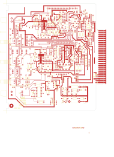
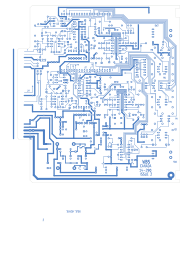
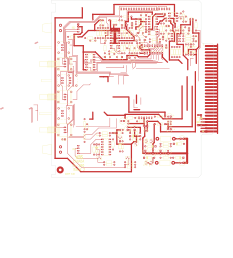
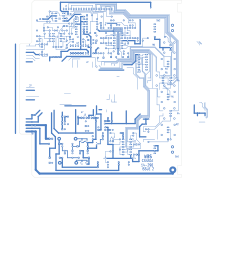

M922 — Mono Equalizer
| Type | module |
| Category | FILTERS |
| Try it | simulator & front panel · download package (zip) |
| Earliest dated evidence | 1994|27 — month & year |
| Evidence | "MAY 24,1994" in WBSps Engineering from H drive-20261018T013433Z-1-002/WBSps Engineering from H drive/WBSps - CONSOLES/REN TV Console/M922/OLD/14-290.PCB |
| Confidence | medium |
| All years found | 1994|27, 1995|28 |
| Used in jobs | Renaisance, WBSStSeriesStereoConsole |
| Folder | DOCUMENTS/RECENT SCANS/WBSps.ca 20210319 - Redone of what Sampson scanned |
| Folder | DOCUMENTS/RECENT SCANS/XXX - was re-scanned - WBPS Scans - SAMPSON - 2319.2KG -20210301T215225Z-001 |
| Folder | DOCUMENTS/WBSps - Word Perfect Manuals-20221115T024240Z-001/WBSps - Word Perfect Manuals |
Connections
What it is made of and what it is part of.
Pinout & connections

Pictures
 1994 - M922 - 3c47_3.jpg
1994 - M922 - 3c47_3.jpg 1994 - M922 - 4466_3.jpg
1994 - M922 - 4466_3.jpg 1994 - M922 - 45bd_3.jpg
1994 - M922 - 45bd_3.jpg 1994 - M922 - 47bd_3.jpg
1994 - M922 - 47bd_3.jpg 1994 - M922 - M 922 & M 901 C...Channel Strip (1) ea_.jpg
1994 - M922 - M 922 & M 901 C...Channel Strip (1) ea_.jpg 19xx - DOC - 922-03-001 - SEE DETAIL NOTE ORIENTATIONS REQ'D FAR SIDE.jpg
19xx - DOC - 922-03-001 - SEE DETAIL NOTE ORIENTATIONS REQ'D FAR SIDE.jpg 19xx - DOC - 922-03-001 - STEREO EQUALIZER MODULE.png
19xx - DOC - 922-03-001 - STEREO EQUALIZER MODULE.png 19xx - 922-03-001 - M922A STEREO EQUALIZER MODULE - DRN DRG - ISS 3.jpg
19xx - 922-03-001 - M922A STEREO EQUALIZER MODULE - DRN DRG - ISS 3.jpg

14-290-top.svg

14-290-bottom.svg

14-290A-top.svg

14-290A-bottom.svg 19xx - M522 - #EQ #Photos-l1600-2.jpg
19xx - M522 - #EQ #Photos-l1600-2.jpg 19xx - M522 - #EQ #Photos-l1600-7.jpg
19xx - M522 - #EQ #Photos-l1600-7.jpg 19xx - M522 - #EQ #Photos-l1600.jpg
19xx - M522 - #EQ #Photos-l1600.jpgDates found in the documents
| Year | Kind | Text | File |
|---|---|---|---|
| 1994|27 | month & year | MAY 24,1994 |
1994 - M922 - M922 - 14-290 - PCB.pcb |
| 1995|28 | manual issue date | Issue #2 September 5, 1995 |
1995 - DOC - 14-152-02-003 - COMPONENT LAYOUT.wp |
| 1995|28 | manual issue date | Issue #1 February 8, 1995 |
1995 - DOC - 14-152BC - PARTS LIST.wp |
| 1995|28 | manual issue date | Issue #2 September 5, 1995 |
1995 - M922 - DOC - 14-152-02-003 - COMPONENT LAYOUT.wp |
| 1995|28 | manual issue date | Issue #1 February 8, 1995 |
1995 - M922 - DOC - 14-152BC - PARTS LIST.wp |
| 1995|28 | manual issue date | Issue #2 September 5, 1995 |
1995 - M901 - DOC - 14-152-02-003 - COMPONENT LAYOUT.wp |
Documents (5)
Photos & scans (10)


Drawings & design files (9)
Circuit boards (2)
| File | Board | Open |
|---|---|---|
| 1994 - M922 - M922 - 14-290 - PCB.pcb | 14-290 | interactive viewer · KiCad board · top render · bottom render |
| 1995 - M922 - M922 - 14-290A - PCB.pcb | 14-290A | interactive viewer · KiCad board · top render · bottom render |
Sub-assemblies & parts used (2)
| Item | What | Family | Year | How we know |
|---|---|---|---|---|
| SA14-152 | COMPONENT LAYOUT | Circuit boards (SA14-nnn) | its circuit board | |
| SA14-290 | Unless All Capacitors Are | Circuit boards (SA14-nnn) | drawing filed with it |
Parts list — board 14-152B (12 parts)
From 14-152BC.WP; also in timelines/data/bom.csv.
| Ref | Part | Value | Manufacturer | Mfr part no. |
|---|---|---|---|---|
| C1 | Capacitor | 4.7 uF/10 V | ITT | 4.7M10 |
| C60 | Capacitor | 0.1 uF/100 V | Sprague | K104K20X7RFVBWN |
| P1 | Connector | 20 Pin Bergstik | Berg | 65645-120 |
| R1 | Resistor 1/4W 5% | 100 | Philips | CR25 |
| R25 | Resistor | 1/4W 5% | 100 | Philips CR25 |
| R37 | Resistor 1/4W 5% | 15K | Philips | CR25 |
| R56 | Resistor 1/4W 5% | 100 | Philips | CR25 |
| U1 | Integrated Circuit | National | LM833N | |
| U3, U4 | delete | |||
| U5 | Integrated Circuit | National | LM833N | |
| U9, U10 | delete | |||
| U11 | Integrated Circuit | National | LM833N |
Consoles & jobs it is connected to (2)
Their own drawings name this module.
| Job | Year | Drawing | Page |
|---|---|---|---|
| Renaisance | 1994 - Renaisance - MKI.pdf | 4 | |
| WBSStSeriesStereoConsole | 1985 - ST - Series Stereo Console.pdf | 47 |
Named in other drawings & documents (7)
From the manuals
Each manual split into its sections. Text that is the same in many Ward-Beck manuals (warranty, address, standard notes) is kept once on the Boilerplate page and linked.
General description (2)
Description — 1768 words · 1995 - M922 - DOC - 14-152-02-003 - COMPONENT LAYOUT.wp, page 1
M922/M922A EQUALIZER MODULES
Refer to Module Layout A 922-04-001
1) High Pass Filter Insert Switch
Switch SW2 inserts the high-pass filter into the signal path. The tally lamp integral to the pushbutton indicates when the filter is in circuit.
2) High Frequency
Control R6 sets the corner frequency for the shelving equalizer characteristic of the high frequency equalizing section. This control adjusts the filter network from 1800 Hz to 15000 Hz; simultaneously for the left and right channels of the M922.
3) High Frequency Boost/Cut
Resistor R3 and its appropriate sections determine the amount of high frequency shelving applied to the audio signal. The control range is from +15 dB to -15 dB.
4) Mid-Frequency
Control R5 sets the Mid-Frequency between 400 Hz and 6.4 kHz. Both the left and right channels of the M922 are controlled simultaneously.
5) Mid-Frequency Cut/Boost
Resistor R1 sets the amount of presence cut or boost applied to the audio signal.
6) Low Frequency
Low Frequency control R4 sets the corner frequency of the shelving equalizer characteristic. In the case of the M922, both left and right channels are simultaneously adjusted from 50 Hz to 200 Hz.
7) Low Frequency Cut/Boost.
R2 controls the amount of cut or boost that is applied in the low frequency spectrum. The full range of this control is ±15 dB.
8) Equalizer Insert Switch
Alternate action switch SW1 inserts the equalizer circuitry in the signal path. An integral tally lamp indicates that the equalization process is taking place. C1 Capacitor 10 uF/25 V ITT 10M25 C2 " 10 uF/25 V " " C3 " 150 pF Philips 638-70151 C4 " 22 pF " 638-10229 C5 " 0.068 uF/100 V Aselco CQ92-MC-100-802M
C6 " 0.068 uF/100 V " " C7 " 0.068 uF/100 V " " C8 " 10 uF/25 V ITT 10M25 C9 " 10 uF/25 V " " C10 " 0.1 uF/100 V Sprague K104K20X7RFVBWN
C11 " 68 uF/10 V ITT 68M10 C12 " 68 uF/10 V " " C13 " 100 pF Philips 638-58101 C14 " 150 pF " 638-70151 C15 " 68 uF/10 V ITT 68M10
C16 " 100 pF Philips 638-58101 C17 " 68 pF " 638-52689 C18 " 68 uF/10 V ITT 68M10 C19 " 100 pF Philips 638-58101 C20 " 68 pF " 638-52689
C21 " 150 uF/10 V ITT 150M10 C22 " 100 pF Philips 638-58101 C23 " 100 pF " " C24 " 68 uF/10 V ITT 68M10 C25 " 10 uF/25 V " 10M25
C26 " 100 pF Philips 638-58101 C27 " 10 uF/25 V ITT 10M25 C28 " 10 uF/25 V " " C29 " 10 uF/25 V " " C30 " 0.1 uF/100 V Sprague K104K20X7RFVBWN
C31 " 68 uF/10 V ITT 68M10 C32 " 68 uF/10 V " " C33 " 68 uF/10 V " " C34 " 22 pF Philips 638-10229 C35 " 0.1 uF/100 V Sprague K104K20X7RFVBWN
C36 " 0.1 uF/100 V " " C37 " 22 pF Philips 638-10229 C38 * " 10 uF/25 V ITT 10M25 C39 " 10 uF/25 V " " C40 " 150 pF Philips 638-70151
C41 Capacitor 22 pF Philips 638-10229 C42 " 0.068 uF/100 V Aselco CQ92-MC-100-802M C43 " 0.068 uF/100 V " " C44 " 0.068 uF/100 V " " C45 " 10 uF/25 V ITT 10M25
C46 " 10 uF/25 V " " C47 " 0.1 uF/100 V Sprague K104K20X7RFVBWN C48 " 68 uF/10 V ITT 68M10 C49 " 68 uF/10 V " " C50 " 100 pF Philips 638-58101
C51 " 150 pF " 638-70151 C52 " 68 uF/10 V ITT 68M10 C53 " 100 pF Philips 638-58101 C54 " 68 pF " 638-52689 C55 " 68 uF/10 V ITT 68M10
C56 " 100 pF Philips 638-58101 C57 " 68 pF " 638-52689 C58 " 150 uF/10 V ITT 150M10 C59 " 100 pF Philips 638-58101 C60 " 100 pF " "
C61 " 68 uF/10 V ITT 68M10 C62 " 10 uF/25 V " 10M25 C63 " 100 pF Philips 638-58101 C64 " 10 uF/25 V ITT 10M25 C65 " 10 uF/25 V " "
C66 " 10 uF/25 V " " C67 " 0.1 uF/100 V Sprague K104K20X7RFVBWN C68 " 68 uF/10 V ITT 68M10 C69 " 68 uF/10 V " " C70 " 68 uF/10 V " "
C71 " 22 pF Philips 638-10229 C72 " 0.1 uF/100 V Sprague K104K20X7RFVBWN C73 " 0.1 uF/100 V " " C74 " 22 pF Philips 638-10229 C75 " 22 uF/25 V " 03016229
C76 " 22 uF/25 V " " C77 " 22 uF/25 V " " C78 " 22 uF/25 V " " C79 " 22 uF/25 V " " C80 " 22 uF/25 V " "
C81 Capacitor 22 uF/25 V Philips 03016229 C82 " 0.1 uF/100 V Sprague K104K20X7RFVBWN C83 " 22 uF/25 V Philips 03016229 C84 " 0.1 uF/100 V Sprague K104K20X7RFVBWN C85 " 22 uF/25 V Philips 03016229
C86 " 0.1 uF/100 V Sprague K104K20X7RFVBWN C87 " 22 uF/25 V Philips 03016229 C88 " 0.1 uF/100 V Sprague K104K20X7RFVBWN C89 " 22 uF/25 V Philips 03016229 C90 " 22 uF/25 V " "
C91 " 0.1 uF/100 V Sprague K104K20X7RFVBWN C92 " 0.1 uF/100 V " " C93 " 0.1 uF/100 V " " C94 * " 0.1 uF/100 V " " C95 * " 0.1 uF/100 V " "
CR1 to CR5 Diode Motorola 1N4003 CR6 " National 1N4148 CR7 " " " CR8, CR9 " Motorola 1N4003
DS1 LED Yellow H.P. HLMP 1401 DS2 " " "
J1 Connector, 20 Pin Socket Berg 65780-020 J2 " 20 Pin Socket " " J3 " 6 Pin Socket " 65780-006
Q1 Transistor National 2N6731 Q2 " " 2N3904 Q3 " " 2N3906 Q4 " " 2N6730 Q5 " " 2N3904
Q6 " " " Q7 " " 2N3906 Q8 " " 2N3904
R1 Potentiometer 5K Clarostat 10-055 R2 " 5K " " R3 " 5K " " R4 " 50K " 10-053 R5 " 50K " 10-057
R6 Potentiometer 50K " 10-053 R7 Resistor 1/4W 5% 15K Philips CR25 R8 " " 15K " " R9 " " 15K " " R10 " " 15K " "
R11 Resistor 1/4W 5% 220 Philips CR25 R12 " " 15K " " R13 " " 15K " " R14 " " 100K " " R15 " " 56K " "
R16 " " 82K " " R17 " " 36K " " R18 " " 100K " " R19 " " 15K " " R20 " " 15K " "
R21 " " 15K " " R22 " " 15K " " R23 " " 220 " " R24 " " 15K " " R25 " " 15K " "
R26 " " 5K6 " " R27 " " 220 " " R28 " " 15K " " R29 " " 15K " " R30 " " 220 " "
R31 " " 15K " " R32 " " 2K7 " " R33 " " 100 " " R34 " " 15K " " R35 " " 15K " "
R36 " " 220 " " R37 " " 2K7 " " R38 " " 15K " " R39 " " 220 " " R40 " " 10K " "
R41 " " 220K " " R42 " " 22K " " R43 " " 15K " " R44 " " 15K " " R45 " " 15K " " R46 Resistor 1/4W 5% 100K Philips CR25 R47 " " 100K " " R48 " " 100K " " R49 " " 100K " " R50 " " 15K " "
R51 "
- source: 1995 - M922 - DOC - 14-152-02-003 - COMPONENT LAYOUT.wp, p. 1
Description — 29 words · 1995 - M922 - DOC - 14-152BC - PARTS LIST.wp, page 1
MFG MFG PART NUMBER
PCB Printed Circuit Board WBS 14-152B
U1,U2, 8 Pin Dip Socket Amp 640463-3 U5-U8,U11,U12
SECTION II
SA14-152B/SA14-152C FILTER ASSEMBLIES
Issue #1 February 8, 1995 MW94001/14-152BC.wp
- source: 1995 - M922 - DOC - 14-152BC - PARTS LIST.wp, p. 1
Specifications (1)
Technical Data — 1148 words · 1995 - M922 - DOC - 14-152-02-003 - COMPONENT LAYOUT.wp, page 1
M922/M922A EQUALIZER MODULES
Gain: Unity, ±0.5 dB.
Frequency Response: ±0.5 dB from 20 Hz to 20 kHz with the equalizer inserted, high pass filter disabled, and the cut and boost controls in their centre detent position.
Noise: -90 dBm absolute (20 Hz to 20 kHz), equalizer cut/boost controls in their centre detent position.
Total Harmonic Distortion: Less than 0.25% from 20 Hz to 20 kHz at +20 dBu output or less. Less than 0.01% at 1 kHz at +20 dBu output level.
Source Impedance: 300 ohms or less, unbalanced. 600 ohms or less, balanced.
Input Impedance: Greater than 10K ohms unbalanced; 20K ohms balanced.
Input Level: -6 dBu nominal, +20 dBu maximum.
Output Impedance: 30 ohms or less unbalanced.
Load Impedance: 5K ohms or greater.
Output Level: -6 dBu nominal, +21 dBu maximum.
Channel Separation: Greater than -80 dB 20 Hz to 20 kHz.
Phasing: Input and Output are in phase with the equalizing controls in the centre detent position.
Equalization Tracking: Within 1 dB.
Power Requirements: ±23 volts DC (M922 120 mA), (M922A 65 mA).
Ambient Temperature: 0 to 50 degrees Celsius.
Dimensions: 1.5" wide x 8" high x 6.6" deep. (38mm x 203mm x 168mm).
Weight: M922 14 ounces, (400 grams). M922A 14 ounces, (400 grams). GENERAL
M922/M922A EQUALIZER MODULES
The M922/M922A Stereo and Mono Equalizers operate in conjunction with the M901 series of input modules.
A High-Pass filter with a 75 Hz corner frequency may be inserted separately, pre-equalizer, or not at all. Insertion is tallied by the LED located in the insertion switch.
The equalizer separates the audio into three separate bands. Low frequencies from 20 Hz to 500 Hz are adjustable over ±15 dB of range. The low frequency section imparts a shelving response to the audio spectrum.
High frequencies are also equalized with a shelving characteristic. Continuously adjustable boost or cut (+15 dB) is provided. The high frequency section can tailor the signal response from 1.8 kHz to 15 kHz.
The mid frequency section controls equalization of signal from 400 Hz to 6.4 kHz, and has a bell-shaped characteristic curve. This section has a ±15 dB adjustment range. The quality factor ("Q") is 2.
The equalizer insertion switch is provided with an integral LED to tally it's operation. All insertion switching in the M922/M922A is performed using solid-state analog switches. No audio is switched directly from the front panel.
The equalizer is packaged in a single module size of 1.5" wide x 8.0" high x 6.6" deep. The M922/M922A is powered by ±23 volts DC. Circuit description details will pertain to the M922A; or the left channel of the M922. Circuitry for the right channel of the M922 operates in a similar manner to that of the left.
Input
The left channel input appears at pins 1 and 2 of the module connector, and the right channel input is at connector pins 4&5. Input shield connections may be made at pins 3 and 6.
Operational amplifier U1A converts the balanced input signal to unbalanced; buffering the equalizer circuity from the signal source.
High Pass Filter
Amplifier U1B; along with resistors R15, R16, R17, R18 and capacitors C5, C6 and C7 form a high pass active filter. This unity gain filter imparts an 18 dB per octave response to signals lower than the 75 Hz corner frequency.
Equalizer Source Selector
Multiplexer U2 and amplifier U3A form a virtual ground current mode selector. The equalizer can process signals unfiltered, or after they have passed through the high pass filter. Amplifier U3A provides a stiff signal drive to the equalizer network.
Combining amplifiers
Amplifiers U3B, U3C, and U3D are combining amplifiers which take the main channel audio signal and add the outputs from the equalizer filters. The equalizer filters reside on the SA14-152 card.
The equalizing characteristic divides the audio spectrum into three bands. The low frequencies from 50 to 200 Hz are mixed by U3C.
U3D combines audio components over the high frequency range from 1.6 kHz to 15 kHz. The mid-frequency portion of the audio spectrum over the range of 400 Hz to 6.4 kHz is mixed by U3B.
Low Frequency Equalizer
The cut/boost control R2A bridges between the input and output of mixing (combining) amplifier U3C.
The armature of R2A feeds a portion of the audio signal to the low frequency shelf control (R4A). This signal is impressed to the equalizer assembly (SA14-152) at connector pin 18. The description of the SA14-152 is in the subassembly section of this manual.
The return feed from the SA14-152 is coupled to the input of the mixing amplifier through R32. This return feed is added or subtracted from the main signal in proportion to it's magnitude and phase.
Mid Frequency Equalizer
The cut/boost control R1A bridges the input and output of mixing amplifier U3B. When this control is in the centre detent position, no correction or equalizing signal is fed to the filter network on the SA14-152.
The output of the filter network is injected back into the summing amplifier U3B; where it is proportionally added or subtracted from the main channel signal. Addition results in a boost condition, while cut is the result of subtraction.
High Frequency Equalizer
The high frequency cut/boost control R3A feeds an error signal to the high frequency filter on the SA14-152.
Similar to the mid and low bands, the output of the high frequency filer on the SA14-152 is added or subtracted by the main channel signal. Resistor R37, connected between the SA14-152 and U3D provides the injection path for this signal.
Output Source Selection
The output of the equalizer can be one of four possible signals; bypass, high-pass filtered, equalized, or equalized and high-pass filtered. The latter state is selected when the high pass filter is inserted in the signal path by U2 and U3A.
U4 and U5 realize an active solid-state, current mode analog switch and output amplifier. Amplifier U5 presents an unbalanced output at connector P1 and pi
- source: 1995 - M922 - DOC - 14-152-02-003 - COMPONENT LAYOUT.wp, p. 1
Drawings (4)
Each scan with its trace laid over it: the slider runs from the scan to the vector drawing. Click one to see it large and save it as SVG, DXF, KiCad, PDF or PowerPoint.
See Detail Note Orientations Req'D Far Sideviewer
Stereo Equalizer Moduleviewer
M922/M922A / STEREO EQUALIZER MODULEviewer
Read from the drawing title blocks.
| Drawing | Title | Date | Drawn by | Checked by | Iss. | Source |
|---|---|---|---|---|---|---|
| 922-03-001 | See Detail Note Orientations Req'D Far Side | DRG | file | |||
| 922-03-001 | Stereo Equalizer Module | file | ||||
| 922-06-001 | Unless All Capacitors Are | 2 | file | |||
| D 922-03-001 | M922/M922A / STEREO EQUALIZER MODULE | DRG | 3 | file |